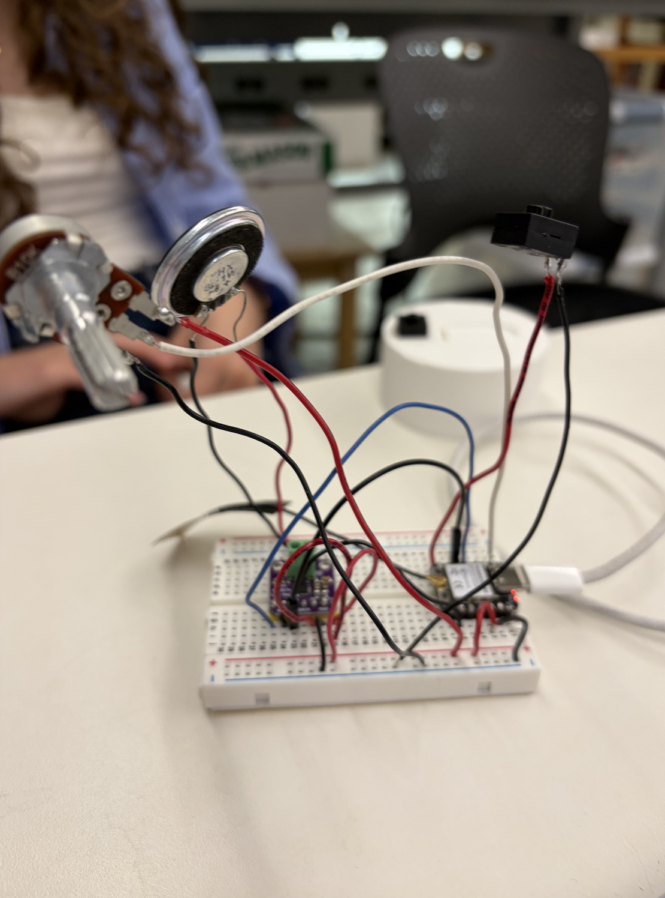
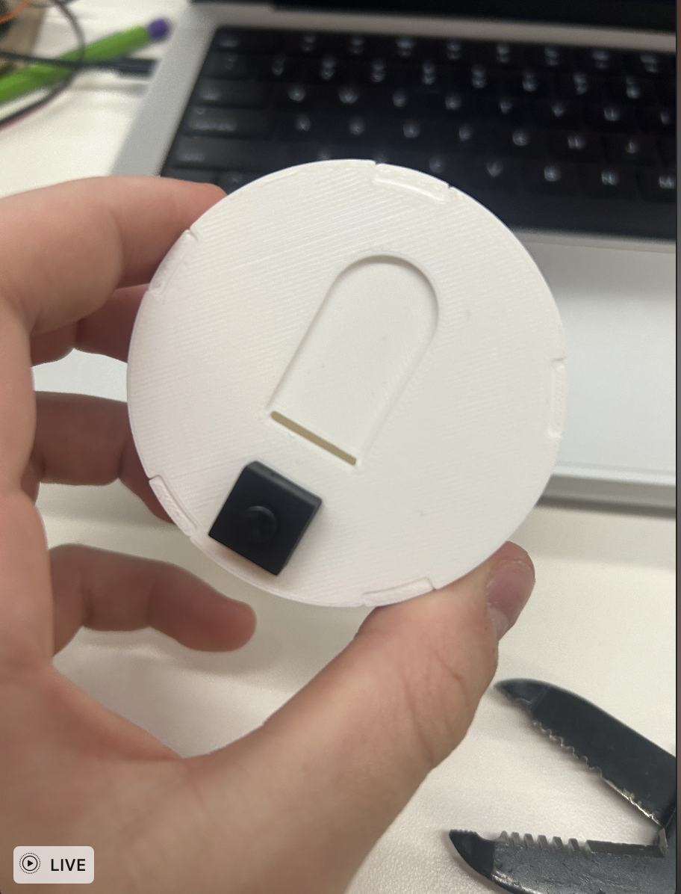

I worked with Ethan, Sophia, and Arden to create a kind of messaging, where the xiaos would talk to each other over ESP NOW. We used a potentiometer as a keyboard (which wasn't the greatest idea because it's impossible to see what letter you have selected). It took us a lot of time to get them to talk to each other because we didn't attatch the antennae to the xiaos. We also wanted to incorporate TTS, so we bought parts with DACs in them off of Amazon so our messages would get read aloud by a speaker. This was the biggest roadblock, not only becuase we had to order the parts, but also because we were having difficulty with the library. Here is a photo of our wiring.

We tried to make the TTS work, but once we found out that that was going to be difficult, we decided to focus on making them talk to each other and having the messages be printed in the serial monitor. Once we had attatched the antennae, we were able to send messages from one xiao to another.
Here is the link to my code.
After we had finished our wiring, we wanted to figure out a way to make it handheld, so we would be able to communicate over longer distances. So, we created an enclosure for the wires with holes for the potentiometer, speaker, and button.

Then, we decided to tackle TTS.